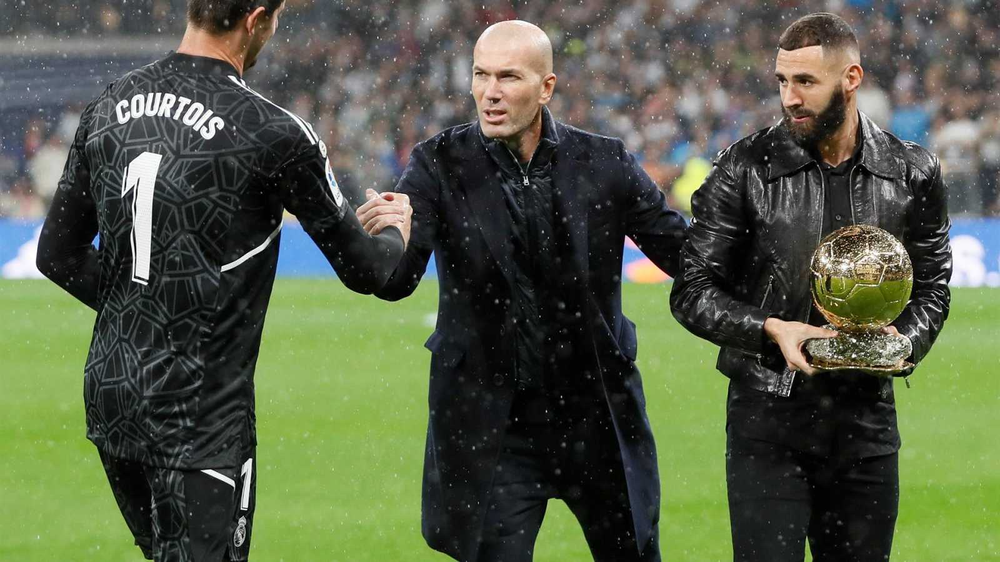
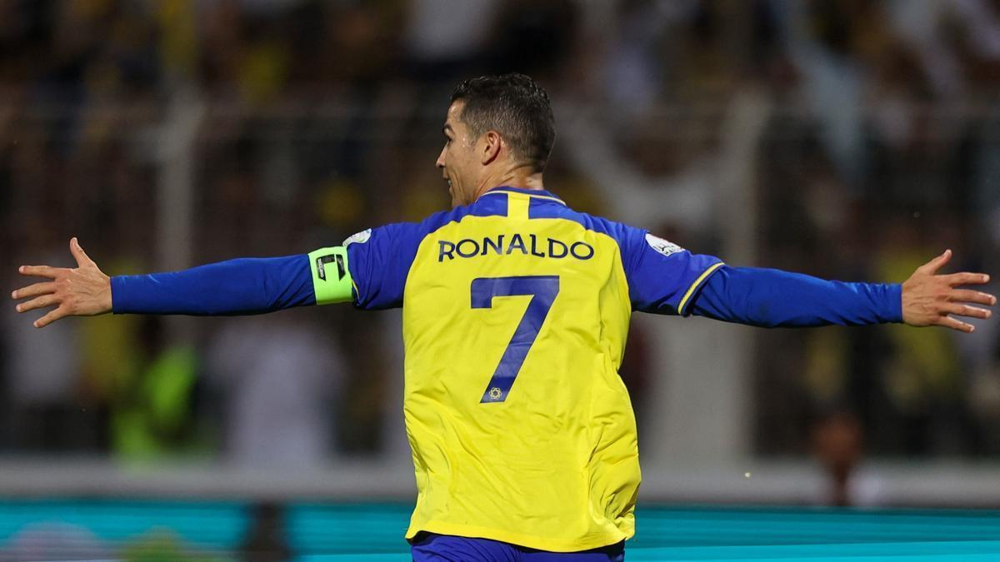
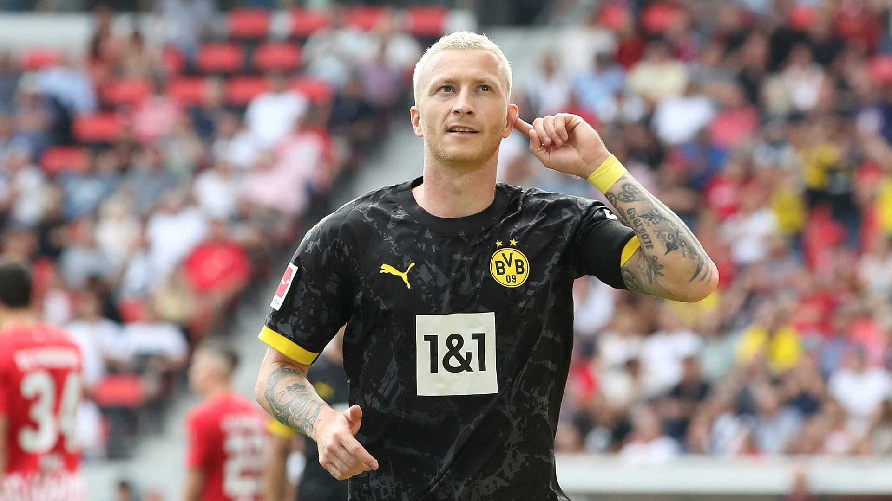
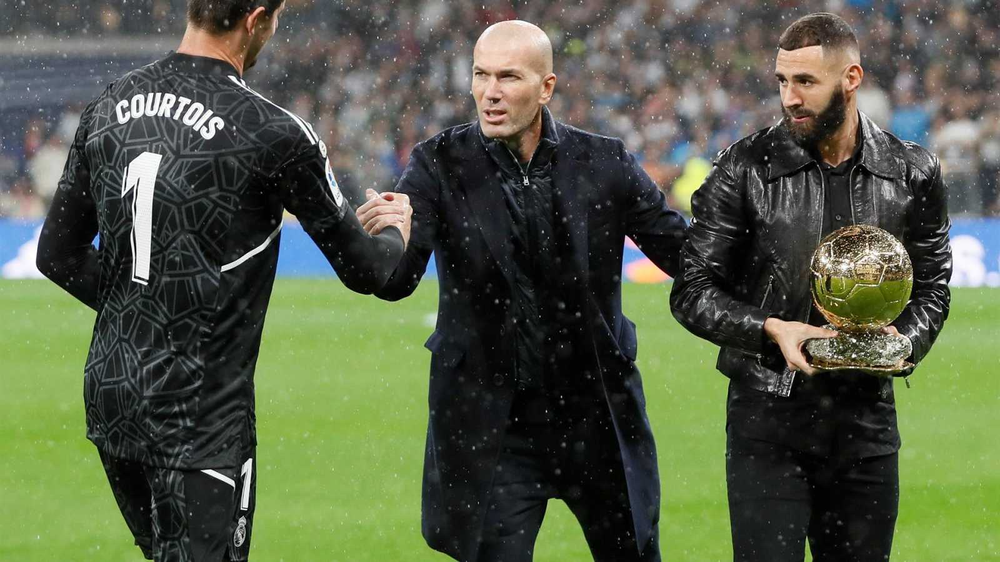
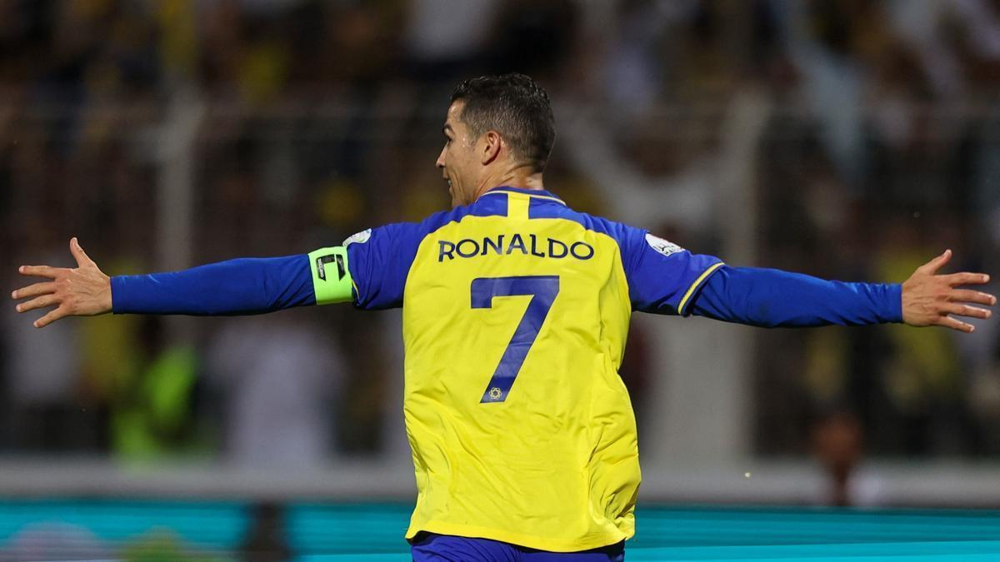
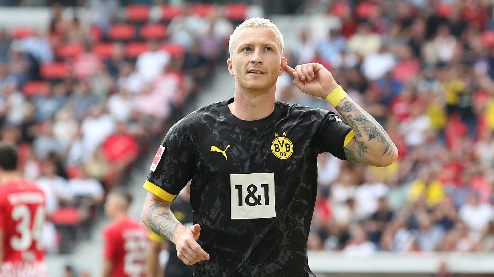
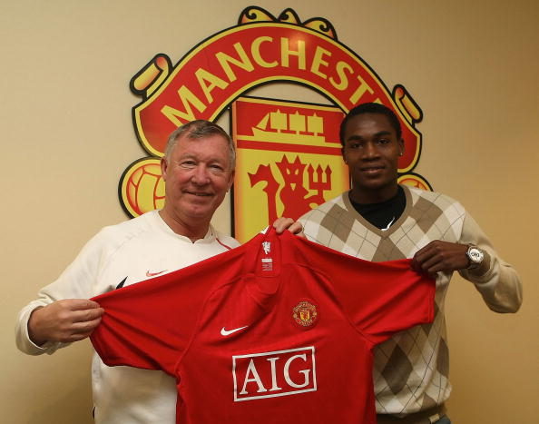

Sobre nosotros
Buenos días Mundo! Inauguramos hoy esta nueva página web para los más futboleros. Por ahora, solo ofrecerá contenidos relacionados con el fútbol español y el fútbol inglés, porque no tenemos empleados ni tiempo. Mandamos un ojeador a ver la Copa Africana de Naciones en enero, a ver si vuelve ya y nos cuenta cosas interesantes.
